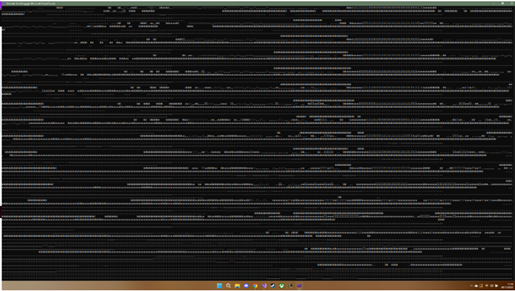
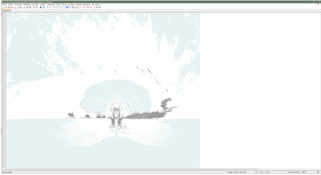
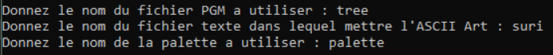
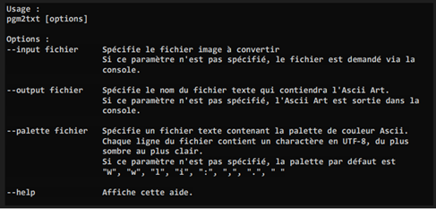
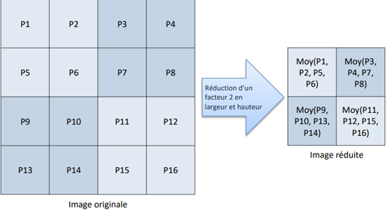

Le projet de conversion d'un image en caractères ASCII a été fait dans le cadre d'un projet étudiant en 1ere année de BUT.
Le but était de choisir une image et avec le code de ressortir un fichier texte contenant les caractères ASCII représentant l'image.
Cette application a été réalisée en C++ par groupe de 2 durant 12 heures.
Ce projet se divise en 3 parties qui représente des versions de ce projet.
Plus la version est avancée, plus le projet comporte des fonctionnalités.
Langage utilisé : C++ Logiciel utilisé : Visual Studio 2022 Nombre de personnes : 2 Temps de développement : 12 heures Date : Decembre 2022
Première version
Lors de la première version, le programme devais demmander à l'utilisateur de rentre le nom de l'image
qu'il souhaite convertir (cette image devait être dans un dossier spéciphique ).
Ensuite le programme la convertie sous le format PGM qui permet de lire un par un la nuance de gris de chaque pixel présent dans l’image.
Notre programme va lire chaque pixel de l’image et va lui attribuer un caractère ASCII en fonction de la nuance de gris du pixel.
Le résultat de la conversion seras affiché dans la console dans cette première version.
Cette fonction prend en paramètre un entier qui représente la nuance de gris d'un pixel et un vecteur de string qui représente la palette de caractère ASCII.
On divise la nuance de gris par 255 pour obtenir un nombre entre 0 et 1.
On multiplie ce nombre par la taille de la palette moins 1 pour obtenir un nombre entre 0 et la taille de la palette.
On arrondi ce nombre pour obtenir un entier entre 0 et la taille de la palette.
On retourne le caractère ASCII correspondant à la nuance de gris du pixel.
Et donc voici le résultat obtenu avec cette première version :

Résultat de la première version
Nous serons tous d'accord que le résultat ne fais pas réver. De 1 parce que l'affichage n'est pas trés beau et de 2 parce que l'on ne peut pas sauvegarder le résultat.
Mais cela est déjà un bon début car on sait que notre programme marche et que l’on a bien le résultat attendu.
Cette étape n’est que le début et elle nous permet d’attaquer la version 2.
Deuxième version
Cette deuxième version va nettement améliorer notre programme car elle va permettre l’enregistrement du Ascii Art dans un fichier TXT.
Pour cela, c'est très simple, au lieu d'afficher les caractères ASCII dans la console, on les enregistre dans un fichier texte.
Nous allons alors ouvrir le fichier texte sur un éditeur de texte comme notepad++ car on peux dézoomer et nous pourrons voir notre image en caractères ASCII.

Résultat de la deuxième version
Cette mise à jour permettra un meilleur affichage de l’image car la limite de caractère par ligne sera grandement agrandie,
aucun retour a la ligne automatique ne sera alors effectué.
Le fichier texte aura alors un nom qui sera renseigné par l’utilisateur et contiendra alors définitivement tout l’Ascii Art jusqu’à
la suppression du fichier ou la modification de celui-ci.
Troisième version
Cette dernière version va permettre le choix de la palette. C'est a dire quels caractères ASCII vont représenter les nuances de gris de l'image.
Le programme va demander à l'utilisateur de choisir une palette parmis une liste de palette prédéfinie.

Résultat de la troisième version
Les fichiers de palette sont des fichiers texte dont chaque ligne est une chaine de caractères représentant un niveau de gris.
La première ligne code le niveau de gris le plus sombre, la dernière le plus clair.
Notre projet n’en contient que 4 mais il est tout à fait possible d’en implémenter d’autres.
Ce choix de la palette permet à l’utilisateur d’avoir un rendu qui lui convient.
autres versions
Par la suite, nous étions supposés faire les versions 4 et 5 que je vais vous expliquer :
La version 4 été supposé être celle qui ajouterais le fait de mettre les paramètres dans la console.
Donc avec cette mise à jour, l’utilisateur peut choisir quels paramètres changer et lesquels non.
S’ils ne changent rien, les paramètres non saisis sont mis par défaut par le programme, sinon,
ils sont pris en compte et sont utilisé par le programme.

Explication de la quatrième version
La dernière version ajoute le fais de pouvoir réduire la taille de l’image.
C’est-à-dire que l’on va prendre les pixels 4 par 4 et on va en faire un seul pixel en faisant une moyenne.

Explication de la cinquième version
Cela nous permettra d’avoir des fichiers moins lourds et moins conséquent.
Conclusion
Au cours de cette SAE, des compétences en programmation ont été utilisé afin de lire les données de l’image,
les transformer en caractères Ascii et les afficher dans un fichier texte. Cependant, toutes ces parties demande la
création de fonction et donc d’algorithme qui ont été optimisé plusieurs fois afin d’avoir le programme le plus rapide possible.
Car effectivement, tout cela n’a pas été fais en un coup. Au début, une image de 1920x1080 mettait 5 minutes à être convertie
en caractère Ascii. Et après l’optimisation, elle n’en mettait plus 10 secondes. Cette SAE m’a permis d’apprendre à optimiser
des algorithmes mais aussi a en créer afin d’arriver à un projet abouti.